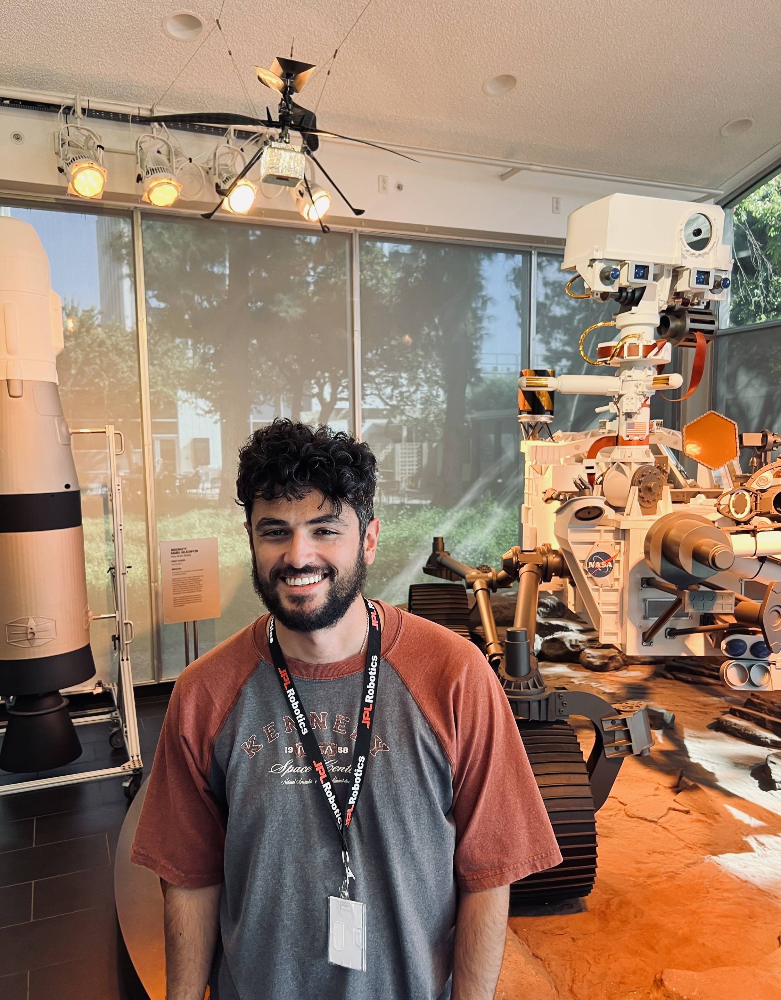
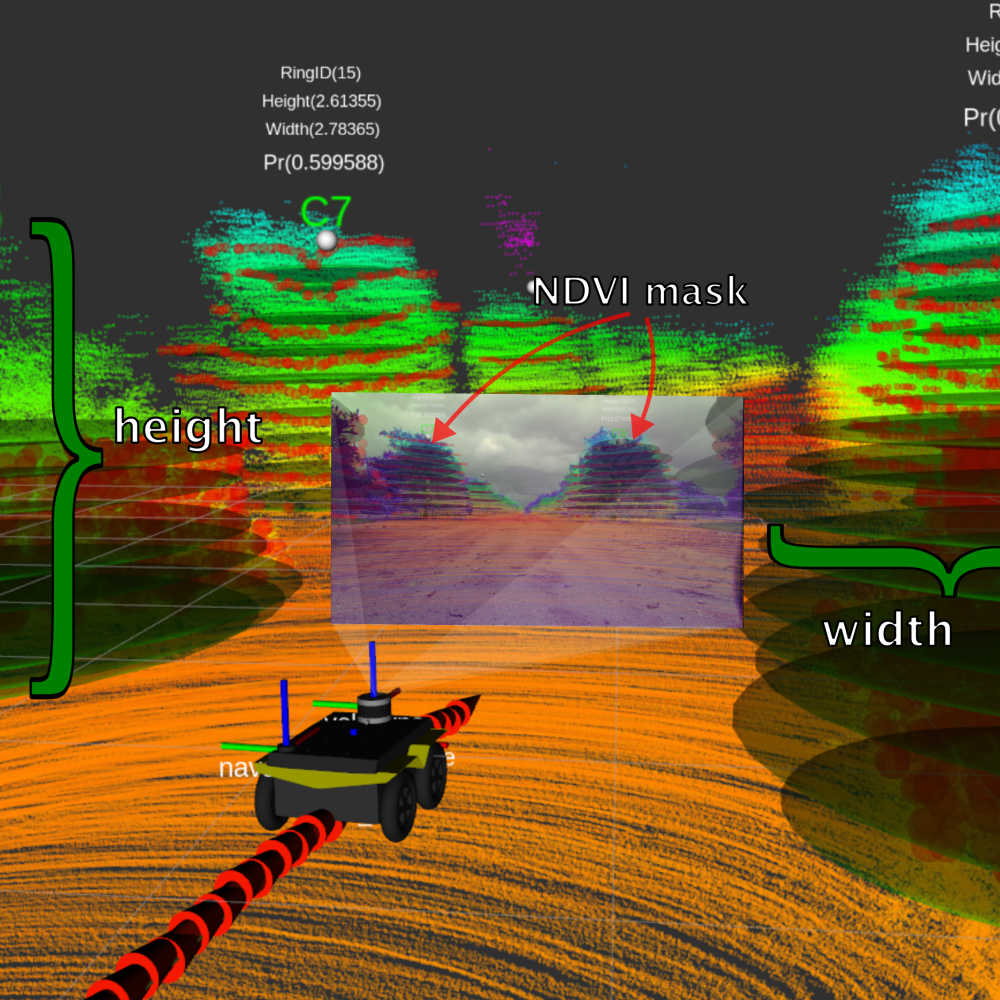

|  |
Dimitrios Chatziparaschis I'm a graduate student in the ECE Department of the University of California, Riverside, working towards my PhD in EE under Konstantinos Karydis. Prior to that, I completed my MSc in Computer Science and Engineering and my Diploma in Electrical and Computer Engineering at the Technical University of Crete in Chania, Greece. In both my MSc and Diploma programs, I was honored to work with Prof. Michail G. Lagoudakis. Email | Google Scholar | Github | LinkedIn |
{kind=link}
ResearchMy work lies at the intersection of computer vision, machine learning, and robotics. Main topics of my research include 3D perception, multi-modal sensing, landmark detection, and localization in outdoor and dynamic settings. In the past I focused on fully autonomous robotic applications for Search-and-Rescue, applying aerial and ground robot relative localization, vision-based object of interest detection, and decision making. |
|
|
Adaptive Environment-Aware Robotic Arm Reaching Based on a Bio-Inspired Neurodynamical Computational Framework
Dimitrios Chatziparaschis, Shan Zhong, Vasileios Christopoulos, Konstantinos Karydis IEEE International Conference on Robot and Human Interactive Communication (RO-MAN), 2024 (Oral Presentation - Best Paper Finalist) arXiv Demonstration of environment-aware robotic manipulation in dynamic target-reaching scenarios using a controller based on Dynamic Neural Fields (DNFs), Stochastic Optimal Control (SOC) theory, and monocular visual input. |
|

|
On-the-Go Tree Detection and Geometric Traits Estimation with Ground Mobile Robots in Fruit Tree Groves
Dimitrios Chatziparaschis, Hanzhe Teng, Yipeng Wang, Pamodya Peiris, Elia Scudiero, Konstantinos Karydis IEEE International Conference on Robotics and Automation (ICRA), 2024 (Oral Presentation) arXiv | paper | video Development of an algorithmic framework to perform real-time tree landmark detection and global association based on an underlying Kalman Filter for tree characteristics estimation and employed criteria for candidate matching based on association uncertainty. |
|
|
Robotic Assessment of a Crop's Need for Watering: Automating a Time-Consuming Task to Support Sustainable Agriculture
Amel Dechemi, Dimitrios Chatziparaschis, Joshua Chen, Merrick Campbell, Azin Shamshirgaran, Caio Mucchiani, Amit K. Roy-Chowdhury, Stefano Carpin, Konstantinos Karydis IEEE Robotics & Automation Magazine, 2023 paper | video Demonstration of a fully autonomous robotic platform for Stem Water Potential (SWP) measurements in avocado fields, based on Gaussian Processes (GPs) for modeling sampling area uncertainty and onboard leaf detection to perform 6D pose estimation and leaf cutting. |

|
Centroid Distance Keypoint Detector for Colored Point Clouds
Hanzhe Teng, Dimitrios Chatziparaschis, Xinyue Kan, Amit K. Roy-Chowdhury, Konstantinos Karydis Proceedings of the IEEE/CVF Winter Conference on Applications of Computer Vision, 2023 (Oral Presentation) paper | supplementary material | code A lightweight keypoint detector based on a centroid point distance criterion, coupled with a multi-modal Non-Maximum Suppression (NMS) algorithm, to obtain salient and repeatable points in both colored and uncolored 3D point clouds. |
|
|
Robot-assisted Soil Apparent Electrical Conductivity Measurements in Orchards
Dimitrios Chatziparaschis, Elia Scudiero, Konstantinos Karydis Mobile Robotics for Digital Farming (In press), 2023 arXiv | book chapter | poster | patent Design and development of a robust semi-autonomous mobile robot solution to conduct soil apparent conductivity measurements in large fields, achieving high linearity in Pearson Correlation Coefficient (r) tests compared with groundtruth. |
|
|
Real-time unmanned aerial vehicle surveying using spatial criteria: a simulated study
Dimitrios Chatziparaschis, Panagiotis Partsinevelos Journal of Applied Remote Sensing, 2023 paper | project webpage Development of a novel surveying approach using a custom-equipped UAV model, incorporating a gimbal with a monocular camera and a laser rangefinder. Ground target localisation based on multilateration, enhanced by a developed spatial filtering module to improve least-squares convergence speed and positioning accuracy. Real-time detection and ranging capabilities were demonstrated and evaluated in simulations, highlighting high applicability and localization accuracy across different environments and flight scenarios. |
|
|
Machine Learning for Enhancing Robotic Perception and Control
Dimitrios Chatziparaschis, Michail G. Lagoudakis Electrical and Computer Engineering, Technical University of Crete, 2020 webpage | master's thesis Development of a fully autonomous UAV behavior in Search-and-Rescue, utilizing machine learning approaches in both perception and control. The UAV's control and decision-making system was based on Deep Reinforcement Learning (DRL) and Deep Deterministic Policy Gradient (DDPG) models and was developed in a custom OpenAI Gym environment. For perception, object-of-interest detection was based on a proposed, designed, and trained feed-forward encoder-decoder network to perform pixel-wise classification and semantic segmentation. |
|
|
A Novel UAV-Assisted Positioning System for GNSS-Denied Environments
Panagiotis Partsinevelos, Dimitrios Chatziparaschis, Dimitrios Trigkakis, Achilleas Tripolitsiotis Remote Sensing, 2020 paper Proposal of UAV system to assist surveys in GNSS-denied areas utilizing its clear-sky visibility of GNSS satellites. This study demonstrates the feasibility of this application through the proposal of system architecture and a theoretical evaluation analysis of positioning error. |
|
|
Aerial and Ground Robot Collaboration for Autonomous Mapping in Search and Rescue Missions
Dimitrios Chatziparaschis, Michail G. Lagoudakis, Panagiotis Partsinevelos Drones, 2020 paper | webpage | diploma thesis Demonstration of an aerial-ground robot collaboration in Search-and-Rescue scenarios. By considering that the humanoid was “blind” in terms of sensing for localization, we introduced a UAV-assisted relative localization solution employing onboard multi-camera depth estimation with stereo correspondence and disparity filtering, 3D occupancy grid mapping, and Adaptive Monte Carlo Localization. The humanoid robot was equipped with a custom-trained YOLO detector for human detection and approached targets through a FootStep planner with R* search algorithm, guided by the UAV. |
Credits to Jon Barron's amazing website.